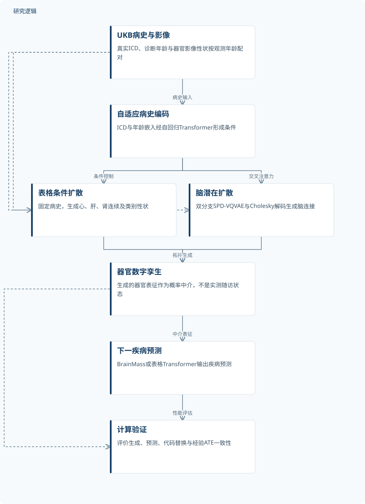
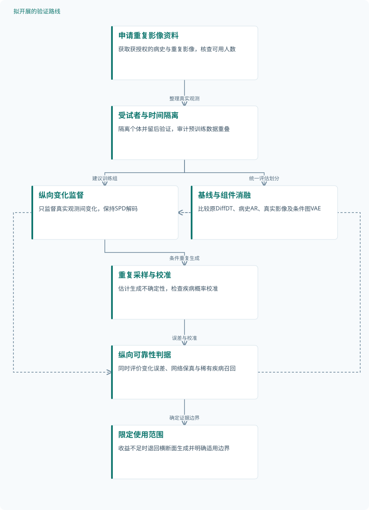

论文精读
融合医疗事件生成模型与社会健康决定因素数字孪生的疾病推理
Marrying Generative Model of Healthcare Events with Digital Twin of Social Determinants of Health for Disease Reasoning
精读更新 2026-10-08 23:14 · 依据论文全文整理
病史中的诊断代码记录了“发生过什么”，却未必解释“身体为何走向下一种疾病”。DiffDT尝试在医疗事件之间加入可生成的多器官数字孪生：从既往病史推断器官状态，再预测后续疾病。其关键进展是将不规则事件建模与保持脑连接矩阵几何结构的扩散生成结合起来。阅读这项工作的价值，既在于理解生理表征如何改善预测，也在于辨清数字孪生、社会因素代理与真实因果干预之间的证据边界。
文章目录
从诊断事件走向器官状态：缺失的生理桥梁
仅依赖电子健康记录的自回归模型，可能同时学习疾病进展和医疗服务利用模式。诊断间隔不规则、观测稀疏，使事件序列难以直接表达连续生理变化。DiffDT将“既往病史—当前器官状态—未来疾病”作为建模主线，试图补上事件预测中的生理桥梁。
论文所谓社会健康决定因素（SDoH），实际采用ICD中的Z及V–Y编码代理，没有输入直接的社会、经济、行为或环境测量。因此，这里的数字孪生首先是病史条件下的器官表征生成，不能直接视为完整的社会因素孪生。代理是否充分覆盖真实社会暴露，仍需要单独验证。
病史条件扩散与Cholesky几何解码如何衔接
自适应分词覆盖整数年龄，有诊断时放入ICD令牌，否则填入healthy，并允许同龄事件。ICD与年龄嵌入相加后进入因果自注意力Transformer，形成病史条件。这里的“因果”指注意力只读取既往位置，不意味着疾病因果效应已被识别。
表格器官性状采用混合连续时间扩散：连续变量加入高斯噪声，类别变量逐步被[MASK]吸收。生成时固定观测病史，只去噪器官特征，并利用Classifier-Free Guidance加强条件控制。脑连接则先经SPD-VQVAE压缩，解码器通过正对角Cholesky因子构造M̂=L̂L̂ᵀ，以保证对称正定性。
双分支版本用FFT拆分高通与低通模式，拼接潜变量后进行病史条件扩散；阈值25由定性消融选择，不能解释为生理频率。随后，BrainMass或表格Transformer读取数字孪生预测疾病。P(Future|Biomarker)·P(Biomarker|History)表达了概率桥接，但没有因此自动获得因果中介或真实干预解释。
DiffDT：从病史生成器官状态再预测事件


原研究的计算流程；表格与脑拓扑生成并行，模拟代码替换不代表真实干预。
下载 SVG图示关系说明
实线表示相邻阶段的信息流，虚线表示跨阶段联系或反馈。
UKB病史与影像 → 自适应病史编码：病史输入；UKB病史与影像 → 表格条件扩散：真实性状训练；UKB病史与影像 → 脑潜在扩散：真实矩阵训练；自适应病史编码 → 表格条件扩散：条件控制；自适应病史编码 → 脑潜在扩散：交叉注意力；表格条件扩散 → 器官数字孪生：表格生成；脑潜在扩散 → 器官数字孪生：拓扑生成；器官数字孪生 → 下一疾病预测：中介表征；下一疾病预测 → 计算验证：性能评估；器官数字孪生 → 计算验证：生成评估
受试者级划分下，预测与生成分别检验
研究使用UKB真实医疗记录与影像派生性状，生成数字孪生属于计算模拟，而非实物干预。脑数据为44,834份矩阵、20,057名受试者；心、肝、肾分别为23,987、28,722、32,155份且各自对应同数量受试者，跨器官不能相加去重。AR实验报告448,651名受试者和7,276,575个令牌，词表包含1,944种疾病。
训练与验证按受试者80%:20%划分，并在AR、扩散和预测微调阶段保持一致；没有报告独立测试集。全局验证集n=3,425，其中两个影像时间点的纵向子集为脑188、心212、肾98、肝229，但未给出对应纵向轨迹误差。疾病预测比较Delphi的GPT2、Qwen3骨干及不同器官中介，脑生成比较普通、SPD与双分支VQVAE。
作者还检验了替换暴露代码后的do(healthy)生成，以及10组暴露—结局代码对的ATE估计误差。前者比较生成状态与真实健康、患病状态的距离，后者以二值化病史计算的经验ATE为参照。两项都是观察性资料上的计算验证，不是受试者接受干预后的随访结果。
| 验证任务 | 样本与规模 | 主要结果 |
|---|---|---|
| 下一疾病预测与器官数字孪生中介比较 | AR训练448,651人、7,276,575个令牌；脑20,057人，心23,987人、肝28,722人、肾32,155人。任务实际评估人数及生成数量未报告。 | Qwen3下DiffDT/Delphi：AUC为0.9171±0.0486/0.8931±0.0548，F1为20.92±20.40/18.17±20.67；同器官F1最高值为65.14、58.50、61.65、64.32。 |
| 多器官生成与脑几何、双分支消融 | 脑44,834份矩阵/20,057人；心23,987人、肝28,722人、肾32,155人。实际生成数量、重复采样及增强数量未报告。 | 脑普通/单分支/双分支RMSE为0.261/0.220/0.203，r为0.503/0.677/0.726；双分支mAcc为98.36±0.10。心/肝/肾RMSE为0.265/0.184/0.146。 |
| 替换暴露代码后的do(healthy)生成比较 | 独立患病及健康人数、生成反事实数量、重复次数均未报告；展示或统计条目不能替代受试者数量。 | 患病/健康参照：FID为92.96±8.67/51.37±4.13，WD为8.95±0.24/6.91±0.23，r为0.39±0.07/0.40±0.08；p依次为2.5e−5、1.6e−6、0.148。 |
| 10组ICD暴露—结局对的ATE误差比较 | 共10个代码对，不是10名受试者；表列暴露人数502或902，结局人数114～238。跨组去重人数及生成数量未报告。 | DiffDT为0.004±0.004，Delphi为0.007±0.005；I10→E78与I10→I20中DiffDT误差更大，并非所有组合获益。 |
展开数据来源、分组、对照与验证边界
下一疾病预测与器官数字孪生中介比较
数据来源。UKB病史及影像性状；AR词表1,944种疾病。BrainMass另在UKB与两个HCP队列共68,251份矩阵上预训练。
分组与工况。Delphi与DiffDT分别使用GPT2、Qwen3；另比较四器官中介的同器官及跨器官疾病预测，补充Qwen3.5对照。
数据划分。受试者级训练:验证=80%:20%，各阶段保持一致；全局验证集3,425人，各任务对应人数与独立测试集未报告。
对照与消融。事件预测对照Delphi；器官预测对照NeuroPath和BrainMass。分词与骨干均有比较，完整中介消融未报告。
评价指标。事件任务报告宏平均AUC、F1；器官任务报告平均F1。F1正文按百分比解释，阈值及±统计含义未报告。
验证边界。长尾影响宏平均F1；疾病级人数和阈值缺失。Qwen3.5报告增加0.12 AUC，但未给绝对值及误差范围；不能分离所有组件收益。
多器官生成与脑几何、双分支消融
数据来源。脑fMRI连接矩阵及UKB MRI表格性状；心112项、肝3项、肾3项特征，表格指标按归一化性状计算。
分组与工况。脑比较普通VQVAE、SPD-VQVAE、SPD-VQVAE-Dual及阈值25/50/75；表格分别评估心、肝、肾。
数据划分。沿用受试者级80%:20%划分；各生成任务实际验证数量未报告。脑纵向子集188人，但未报告纵向生成误差。
对照与消融。脑生成有普通和单分支SPD自编码器对照；表格生成没有列出对照模型。单步耗时另比较SPD-DDPM。
评价指标。脑使用RMSE、WD、r和mAcc；mAcc在边阈值0.5～0.9、步长0.1下平均。表格使用RMSE、WD，归一化规则及WD细节未报告。
验证边界。SPD保证仅是数学有效性；阈值选择主要依赖定性结构。表格缺基线，不宜跨尺度比较误差；单步计时硬件与失败原因未报告。
替换暴露代码后的do(healthy)生成比较
数据来源。将患者暴露代码，例如G12，替换为[Healthy]后生成数字孪生；真实患病与健康数字孪生作为参照。
分组与工况。分别比较do(healthy)与GT disease、do(healthy)与GT healthy；具体器官及健康判定标准未报告。
数据划分。该反事实评估的具体样本划分未报告；不能将框架统一划分自动视为此项评估的完整设计。
对照与消融。真实健康与患病状态为参照；其他反事实生成方法对照未报告，也没有真实干预后观测对照。
评价指标。FID、WD越低越好，Pearson r越高越好；FID特征提取器、检验方法及±含义未报告。
验证边界。FID与WD支持更接近健康分布，r不支持显著差异；代码替换不是现实治疗，无法证明个体干预效果。
10组ICD暴露—结局对的ATE误差比较
数据来源。二值化ICD序列提供经验ATE；DiffDT使用生成孪生、Delphi使用token嵌入拟合倾向评分MLP。
分组与工况。包含I10→I25、I10→E78、K57→K64等10组；要求足够共同暴露与结局样本，具体筛选阈值未报告。
数据划分。ATE评估的训练验证测试划分未报告；逐组合人数不能直接求和，亦不能推出独立测试规模。
对照与消融。Delphi嵌入加倾向评分MLP为模型对照；经验ATE是误差参照，不是已知真实因果效应。
评价指标。模型ATE相对经验ATE的绝对误差及跨组合平均值，越低越好；经验ATE公式、单位及±含义未报告。
验证边界。表列中心值约降低43%，与正文“超过一半”不一致；混杂控制及显著性细节缺失，不能由经验ATE一致性确认因果中介。
几何与预测收益明确，因果和泛化仍待补强
Qwen3配置下，DiffDT宏平均AUC为0.9171，Delphi为0.8931；宏平均F1分别为20.92和18.17，正文按百分比解释F1。双分支脑生成RMSE降至0.203、相关系数升至0.726，支持几何约束与模式分解的组合价值。不过，长尾疾病使F1仍低，较高AUC不等于可靠的下一疾病判定。
反事实生成的FID、WD更接近健康参照，但相关系数差异p=0.148，并不显著。ATE平均绝对误差由0.007降至0.004，按表列中心值约降低43%，不支持正文“超过一半”的说法。与经验关联量更一致，也不能替代混杂控制和因果识别。
端到端推断在单张RTX 6000 Ada（48 GB）上约需1.2秒/受试者/中介，但计时重复次数未报告。UKB健康志愿者偏倚、横断面影像占主导，以及误差项±定义缺失，限制部署与纵向解释。预训练人数和ICD层级亦存在不同口径；当前证据更适合支持生成辅助预测，而非已验证的个体干预系统。
从这篇论文走向下一项研究
以下为结合研究方向提出的候选方案，实验设计与预期目标有待验证。
面向健康监测的纵向孪生可靠性评估
问题与短板。现有模型主要从横断面配对学习，尚未证明生成轨迹能追踪个体变化。建议先限定为健康状态监测，检验重复影像变化与风险校准，不直接延伸到干预决策。
改进机制。保留Cholesky几何解码，增加相邻真实观测间的变化量监督，并通过重复条件采样表达不确定性。稀疏随访只监督已观测时间点，避免将插值轨迹当作标签。
候选创新。候选创新是把SPD约束、个体变化监督和预测校准联结起来。相关文献Conditioned Graph Reconstruction仅摘要可核验，已涉及条件网络重建；新组合应突出纵向可靠性而非泛称首次生成。
数据与实验设计。建议设计：经申请获得UKB重复影像与病史，采用受试者隔离、按时间留后验证。设置单次影像与重复影像训练组，再按随访间隔分层；样本数由授权资料可用性决定，不预设设备。
对照与消融。比较原DiffDT、仅病史AR、最近一次真实影像输入及条件图VAE。消融变化量监督与重复采样，固定训练预算；核查预训练与评估受试者重叠，防止隐性泄漏。
成功判据。预注册变化量RMSE、网络结构保真度、Brier分数与校准误差，并以受试者bootstrap报告区间。成功要求纵向误差和校准同时改善，且稀有疾病召回不明显下降。
风险与替代方案。重复影像少且随访选择不随机，可能学到回访倾向而非生理变化。若纵向训练不稳定，退回横断面生成加明确不确定性输出，并限定可支持的年龄与间隔范围。
结构参照约束下的个体化脑孪生监测
问题与短板。正定性并不能证明脑网络生物合理，双分支个体差异目前主要靠重建与视觉证据。建议检验结构连接参照能否减少貌似合理但偏离个体网络组织的生成。
改进机制。在有配对DWI与fMRI的资料中，引入结构连接和脑区几何参照损失，约束功能连接偏离参照的模式，而非强迫功能边逐一匹配结构边，同时保留SPD解码。
候选创新。Benchmarking functional connectivity by the structure and geometry of the human brain的摘要支持结构几何参照思路。候选新组合是将该参照用于条件扩散训练及失真监测，不宣称结构决定全部功能连接。
数据与实验设计。建议设计：申请可用配对影像，或在获批的数据集中整理配对连接矩阵。按受试者分组，设置原双分支、结构约束、结构加几何约束三组，并增加跨采集条件留出评估。
对照与消融。基线采用原DiffDT与单分支SPD模型，另设随机打乱结构参照的负对照。消融结构项、几何项和频率阈值，统一预处理与特征维数，避免尺度变化制造优势。
成功判据。同时考察SPD有效性、个体辨识率、网络模块保真度与下一疾病校准。成功需参照一致性提高而个体差异不收缩，并在留出采集条件下保持收益，不能仅凭RMSE下降。
风险与替代方案。结构与功能本就存在差异，过强约束可能抹去真实高阶网络模式。若出现个体差异收缩，改用软权重或只将参照作为异常检测指标，并将不适用网络单独报告。
建议路线：以重复观测检验纵向孪生可靠性


对应第一条研究路线，所有新增监督、分组和判据均为建议设计，不表示已取得改善。
下载 SVG图示关系说明
实线表示相邻阶段的信息流，虚线表示跨阶段联系或反馈。
申请重复影像资料 → 受试者与时间隔离：整理真实观测；受试者与时间隔离 → 纵向变化监督：建议训练组；受试者与时间隔离 → 基线与组件消融：统一评估划分；纵向变化监督 → 重复采样与校准：条件重复生成；重复采样与校准 → 纵向可靠性判据：误差与校准；基线与组件消融 → 纵向可靠性判据：公平比较；纵向可靠性判据 → 限定使用范围：确定证据边界；纵向可靠性判据 → 纵向变化监督：失败反馈调整